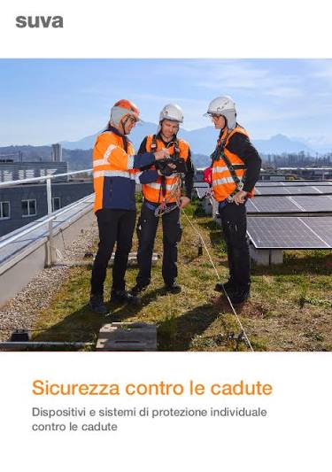

Il nostro approccio alla sicurezza

Previsione dei Pericoli
Analizziamo continuamente gli scenari operativi per anticipare gli eventi, riducendo a zero le probabilità di incidente sul lavoro.

Prodotti che ispirano Fiducia
Costruiamo relazioni solide con i nostri clienti. La fiducia reciproca è la base per un ambiente lavorativo sano e protetto grazie ai nostri prodotti e risultati.
Documentazione Conforme
Forniamo report dettagliati e documenti DVR certificati, con facile accesso, rispettando pienamente tutte le normative legislative vigenti in materia.